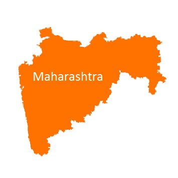
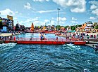

5 Cities in Maharashtra
Nashik
Mumbai
Pune
Nagpur
solapur
-
Nashik

- Nashik is an ancient city and the largest city in the northern region of the Indian state of Maharashtra. Situated on the banks of river Godavari, Nashik is the fourth largest city in Maharashtra, after Mumbai, Pune and Nagpur. Nashik is well known for being one of the Hindu pilgrimage sites of the Kumbh Mela, which is held every 12 years. Nashik is located about 190 km north of state capital Mumbai. The city is called the "Wine Capital of India" as more than half of India's vineyards and wineries are located here. Around 90% of all wine produced in India comes from the Nashik Valley. in the northern region of the Indian state of Maharashtra. Situated on the banks of river Godavari, Nashik is the fourth largest city in Maharashtra, after Mumbai, Pune and Nagpur.
Nashik is well known for being one of the Hindu pilgrimage sites of the Kumbh Mela, which is held every 12 years. Nashik is located about 190 km north of state capital Mumbai. The city is called the "Wine Capital of India" as more than half of India's vineyards and wineries are located here.
Mumbai
- Mumbai is the capital city of the Indian state of Maharashtra. According to the United Nations, as of 2018, Mumbai is the second-most populous city in the country after Delhi and the seventh-most populous city in the world with a population of roughly 20 million.[14] As per Indian government population census of 2011, Mumbai was the most populous city in India with an estimated city proper population of 12.5 million living under Municipal Corporation of Greater Mumbai.[15] Mumbai is the centre of the Mumbai Metropolitan Region, the sixth most populous metropolitan area in the world with a population of over 23 million.[16] Mumbai lies on the Konkan coast on the west coast of India and has a deep natural harbour. In 2008, Mumbai was named an alpha world city.[17][18] It has the highest number of millionaires and billionaires among all cities in India.[19][20] Mumbai is home to three UNESCO World Heritage Sites: the Elephanta Caves, Chhatrapati Shivaji Maharaj Terminus, and the city's distinctive ensemble of Victorian and Art Deco buildings.
Pune
- Pune, known as Poona until 1978 (Marathi: [puɳe] (listen); English: /ˈpuːnə/), is the second largest city in the state of Maharashtra and the 7th most populous city in India, with an estimated population of 7.4 million as of 2020.[23] It has been ranked as "the most livable city in India" several times.[24] Along with the municipal corporation limits of PCMC and the three cantonment towns of Camp, Khadki and Dehu Road, Pune forms the urban core of the eponymous Pune Metropolitan Region (PMR).According to the 2011 census the urban area had a combined population of 5.05 million whilst the population of the metropolitan region was estimated at 7.4 million.[9] Situated 560 metres (1,837 feet) above sea level on the Deccan plateau on the right bank of the Mutha river,[26] Pune is also the administrative headquarters of its namesake district.
Nagpur
- Nagpur /næɡˈpʊər/ is the third largest city and the winter capital of the Indian state of Maharashtra.[17] It is the 13th largest city in India by population[18] and according to an Oxford's Economics report, Nagpur is projected to be the fifth fastest growing city in the world from 2019 to 2035 with an average growth of 8.41%.[19] It has been proposed as one of the Smart Cities in Maharashtra and is one of the top ten cities in India in Smart City Project execution.Nagpur is the seat of the annual winter session of the Maharashtra state assembly. It is a major commercial and political center of the Vidarbha region of Maharashtra. In addition, the city derives unique importance from being an important location for the Dalit Buddhist movement and the headquarters for the Hindu nationalist organization RSS. Nagpur is also known for the Deekshabhoomi, which is graded an A-class tourism and pilgrimage site, the largest hollow stupa among all the Buddhist stupas in the world. The regional branch of Bombay High Court is also situated within the city.
solapur

-
Solapur (pronunciation (help·info), formerly Sholapur) is a city located in the south-western region of the Indian state of Maharashtra, close to its border with Karnataka.[6][7] Solapur is located on major highway, rail routes between Mumbai, Pune, Bangalore and Hyderabad, with a branch line to the cities of Bijapur and Gadag in the neighbouring state of Karnataka. Solapur international Airport is under construction.[8] It is classified as A1 Tier and B-1 class city by House Rent Allowance (HRA) classification by the Government of India.[9] It is the 7th biggest Metropolis Urban Alligomy and 11th most Populated City in Maharashtra as well as 43rd largest urban agglomeration and 49th most populous city in India.Solapur leads Maharashtra in production of beedi.[11][12] Solapuri Chadars and towels are famous not only in India but also at a global level,[13][14] however there has been a significant decline in their exports due to quality reasons.[15] "Solapuri chadars" are the famous and first product in Maharashtra to get a Geographical Indication tag[16][17] It has been a leading centre for cotton mills and power looms in Maharashtra. Solapur had the world's second-largest and Asia's largest spinning mill.[18] The National Research Centre on Pomegranate (NRCP) of India is located in Solapur.[19][20][21] and pomegranate farming is done on a large scale in Solapur District.[22] The Science Centre in Kegaon (Solapur) is the third largest and prominent scientific association in Maharashtra.[23][24] The Raichur-Solapur Power Transmission line of 765 kV power capacity suffices the power grid accessing need of the southern states of Karanataka and Andhra Pradesh.[25][26][27][28] The first waste-to-energy electricity plant in Maharashtra is situated in Solapur.
| Rank |
Name |
District |
Population |
| 1 |
Mumbai |
Mumbai |
1,84,14,288 |
| 2 |
Pune |
Pune |
50,49,968 |
| 3 |
Nagpur |
Nagpur |
24,97,777 |
| 4 |
Nashik |
Nashik |
15,62,769 |
| 5 |
Solapur |
Solapur |
9,51,119 |
Information about other cities in Maharashtra